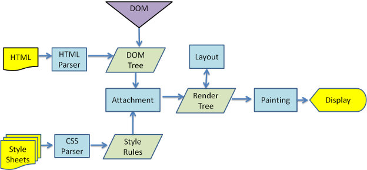
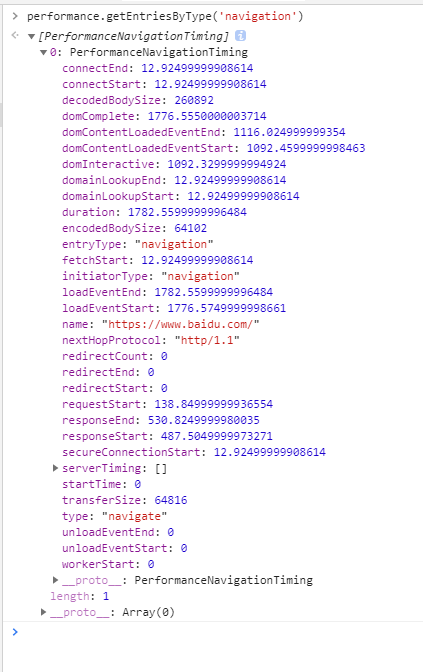
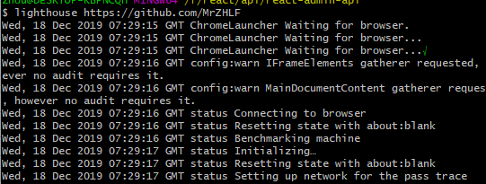
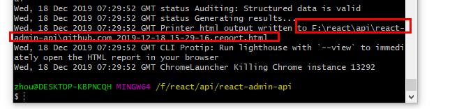
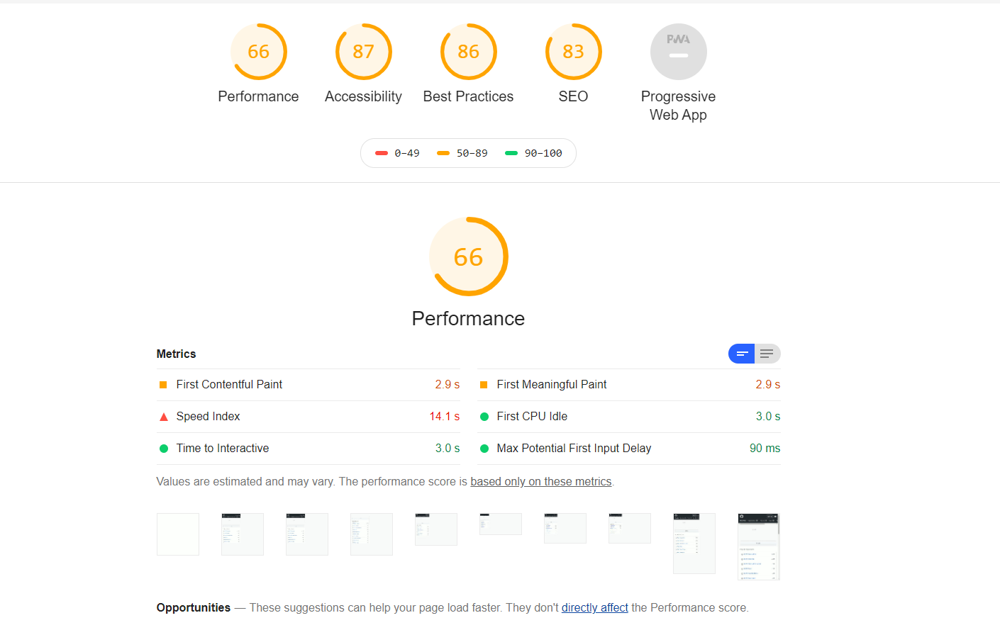
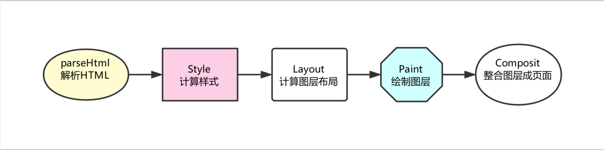

前端性能优化，是每个前端必备的技能，优化自己的代码，使自己的网址可以更加快速的访问打开，减少用户等待，今天就会从几个方面说起前端性能优化的方案，
看下面的一张图，经常会被面试官问，从输入URL到页面加载完成，发生了什么？

浏览器缓存之客户端缓存
无需请求的memory cache，disk cache；
需要发请求验证的Etag、Last-Modified304；
H5新增的 localStorage、sessionStorage；
合理利用以上缓存，可以很大程度上提高前端性能。
1.如果不合并 === > 文件与文件之间有插入的上行请求，增加了N - 1 个网络延迟；受丢包问题影响更严重；经过代理服务器时可能会被断开
2.如果合并 === > 首屏渲染时间变长； 文件缓存大面积失效
3.公共库合并、不同页面的合并
4.使用在线网站进行文件合并、使用 nodejs 实现文件合并
2.expires: Mon, 16 Mar 2020 09:50:27 GMT
3.last-modified: Thu, 15 Feb 2018 14:17:52 GMT
Memory Cache
内存缓存，短命，比如常用数据js里，浏览器也有自己的策略，base64图片，体积小的静态资源
Service Worker Cache
是一种独立于主干线程之外的javascript线程，它脱离于浏览器窗体，算是幕后工作，可以实现离线缓存，网络代理等
图片优化
2.png
因为 http 请求无状态，所以需要 cookie 去维持客户端状态
cookie 生成方式：http response header 中的 set-cookie； js 中可以通过document.cookie读写cookie
使用：用于浏览器端和服务器端的交互；客户端自身数据的存储
过期时间：expire
存储限制：作为浏览器存储，大小4kb左右；需要设置过期时间 expire
cookie 存储能力被 localstorage 代替
httponly 不允许 js 读写
cookie 中在相关域名下面 --- cdn的流量损耗 。 解决：cdn 的域名和主站的域名要分开
// 函数节流 每隔多少时间执行一次
const throttle = (func ,wait = 100) =>{
// 无论调用多少次，函数都是100毫秒执行一次
let lastTime =0;
return(...args) =>{
let now = new Date().getTime()
if(now - lastTime >wait) {
func.apply(this.args)
lastTime = now
}
}
}
let i =1;
window.addEventListener('scroll',throttle(()=>{
// 使用做图片懒加载
console.log(i)
i+=1
},350))
/*
校验用户是不是重复，用户输入完，向后端发送请求
如果用户每次输入，都发生请求，造成请求过多
用户停止输入字符串350毫秒，在发出
*/
const debounce = (func,wait = 350) =>{
let timer =0;
return (...args)=>{
if(timer) {
clearInterval(timer)
}
timer = setTimeout(() => {
func.apply(this,args)
}, wait);
}
}
let i =1;
window.addEventListener('scroll',debounce(()=>{
// 验证
console.log(i)
i+=1
},350))
lazy-load
对于一些图片多，页面长的网页来说，如果每次打开页面加载全部的网页内容，页面加载速度势必会受到影响，如果每次打开网页只将网页可视区域的内容加载给用户 ，将大大提高网页浏览速度，同时也减轻服务器负载，我们可以使用lazyload.js来实现对图片的延迟加载，当网页图片进入到浏览器可视区域时，才会去请求服务器加载图片。
// 获取所有的图片
const img = document.getElementsByTagName('img')
// 获取可视区域的高度
const viewHeight = window.innerHeight || document.documentElement.clientHeight;
// num用于计算当前显示到那一张图片，避免每次都是从第一张开始检查是否漏出
let num =0;
function lazyload() {
for(let i=num;i<img.length;i++) {
// 用可是区域高度减去元素顶部距离可视区域顶部的高度
let distance = viewHeight - img[i].getBoundingClientRect().top
// 如果可视区域高度大于等于元素顶部距离可视区域顶部的高度，说明元素露出
if(distance >=0) {
// 给元素写入真实的src，展示图片
img[i].src = img[i].getAttribute('data-src')
// 前i张图片已经加载完毕，，下次从第i+1张开始检查是否露出
num = i+1
}
}
}
// 监听scroll
window.addEventListener('scroll',lazyload,false)
performance.getEntriesByType('navigation') 性能检测
通过在浏览器控制台输入这个命令，就可以检测到网页加载数据，检测网页加载性能

npm install -g lighthouse安装完之后运行，也是找的github网址，运行成功之后，会弹出一个生成的html页面。

生成一个html文件，找到然后直接打开就行


浏览器渲染
